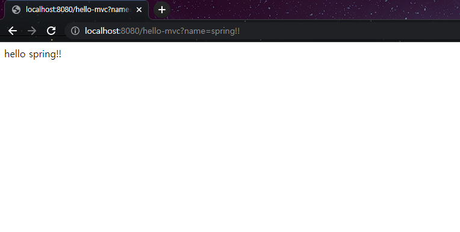

MVC와 템플릿 엔진
- MVC : Model, View, Controller의 줄인말로 각각의 역할을 분리하여 수행하도록 하는 디자인 패턴이다.
- Model : 모든 데이터, 상태 및 어플리케이션 로직이 들어있으며 View나 Controller에서 Model의 상태를 조작하거나 가져오기 위한 인터페이스를 제공한다.
- View : Model을 표현하는 방법을 제공하는 사용자 인터페이스로 일반적으로 화면에 표시하기 위해 필요한 상태 및 데이터를 Model에서 직접 가져온다.
- Controller : View와 Model사이에 위치하며 사용자로부터 요청을 받아서 그 요청에 맏는 데이터를 Model에 의뢰하고 해당 Data를 View에 반영하여 사용자에게 알려주도록 한다.
- Spring에서는
@GetMapping 이라는 annotation을 사용하여 Mapping의 대상이 되는 template 파일을 resources/templates 디렉토리 내에서 찾아서 html로 변환 후 웹브라우저에 전달한다.
package hello.hellospring.controller;
import org.springframework.stereotype.Controller;
import org.springframework.ui.Model;
import org.springframework.web.bind.annotation.GetMapping;
@Controller
public class HelloController {
@GetMapping("hello-mvc")
public String helloMvc(@RequestParam("name") String name, Model model){
model.addAttribute("name", name);
return "hello-template";
}
}
<html xmlns:th="http://www.thymeleaf.org">
<body>
<p th:text="'hello ' + ${name}">hello! empty</p>
</body>
